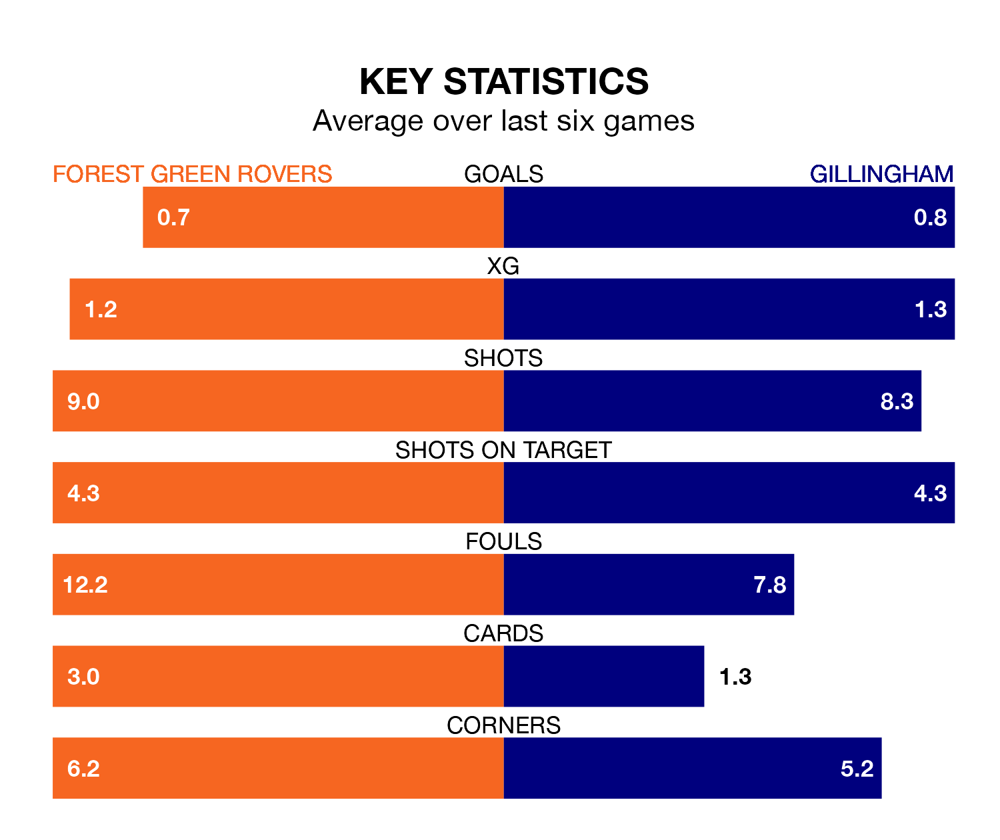

Forest Green Rovers face Gillingham at the Bolt New Lawn on late Friday looking to secure a first win in six EFL League Two games.
The Green have lost three and drawn two matches since they last earned three points – against Crawley Town on October 28.
They face a Gillingham side who have won just two and lost three over that time.
Forest Green are 23rd in the table after 20 games, of which they have won four and drawn three, earning 15 points.
Gillingham are 13 places ahead of Rovers in 10th, with 10 wins and one draw putting them on 31 points.
In Jake Turner, the Gills can rely on one of the league's safest pair of hands. He has kept seven clean sheets in his 21 appearances this season in EFL League Two.
In the Green's net, Luke Daniels has two clean sheets in 10 games. He has conceded a goal every 53 minutes, 30% more often than the 68 minutes between goals for Turner.
With 19 goals in 21 games so far this season, the visitors are the league's lowest scorers with 0.9 goals per game. But they are conceding fewer than average too, letting in 28 goals at a rate of 1.3 per game.
The home team are also below average scorers, with 1.0 goal per game, compared to a league average of 1.5. They have conceded 1.9 goals per game.
Forest Green's last match was on Saturday, a 2-0 loss against Milton Keynes Dons.
Gillingham lost 2-0 against Bradford City last time out, also on Saturday.
Friday's match will be refereed by Samuel Allison, who has taken charge of one EFL League Two game so far this season, issuing no red cards and booking two players. He has not awarded any penalties.
He is yet to oversee a match featuring either Forest Green or Gillingham this season.
Updated: 12:43, 20/12/23